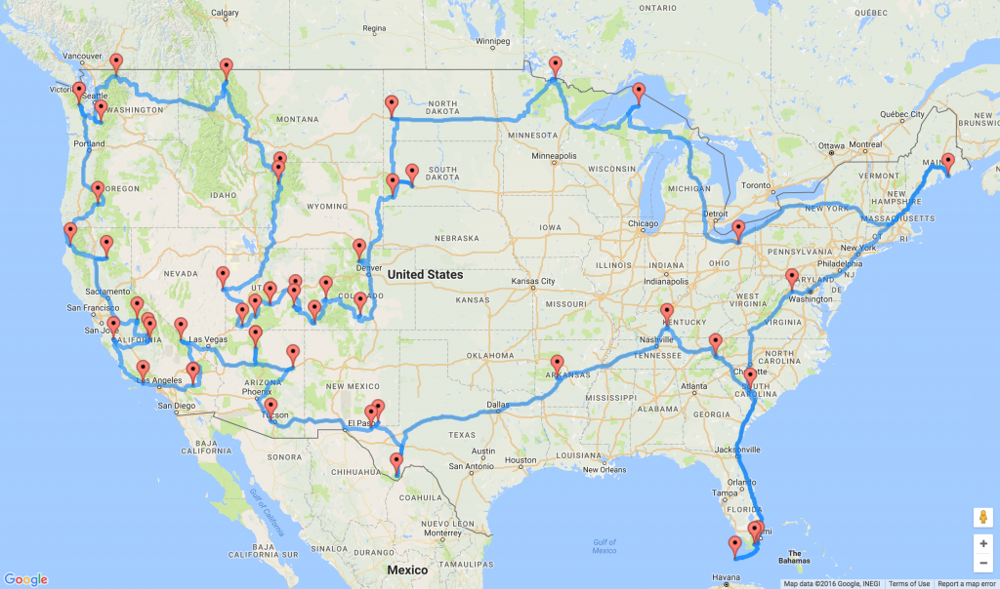

Brad & Deb's National Parks Road Trip

- Mt. Rainier National Park, WA
- Great Smoky Mountains National Park, TN-NC
- Congaree National Park, SC
- Mammoth Cave National Park, KY
- Big Bend National Park, TX
- Guadalupe Mountains National Park, TX
- Carlsbad Caverns National Park, NM
- Saguaro National Park, AZ
- Petrified Forest National Park, AZ
- Grand Canyon National Park, AZ
- Death Valley National Park, CA
- Joshua Tree National Park, CA
- Channel Islands National Park, CA
- Pinnacles National Park, CA
- Sequoia National Park, CA
- Kings Canyon National Park, CA
- Yosemite National Park, CA
- Lassen Volcanic National Park, CA
- Redwood National Park, CA
- Crater Lake National Park, OR
- Olympic National Park, WA
- North Cascades National Park, WA
- Glacier National Park, MT
- Yellowstone National Park, WY-MT-ID
- Grand Teton National Park, WY
- Great Basin National Park, NV
- Zion National Park, UT
- Bryce Canyon National Park, UT
- Capitol Reef National Park, UT
- Arches National Park, UT
- Canyonlands National Park, UT
- Mesa Verde National Park, CO
- Black Canyon of the Gunnison National Park, CO
- Great Sand Dunes National Park, CO
- Rocky Mountain National Park, CO